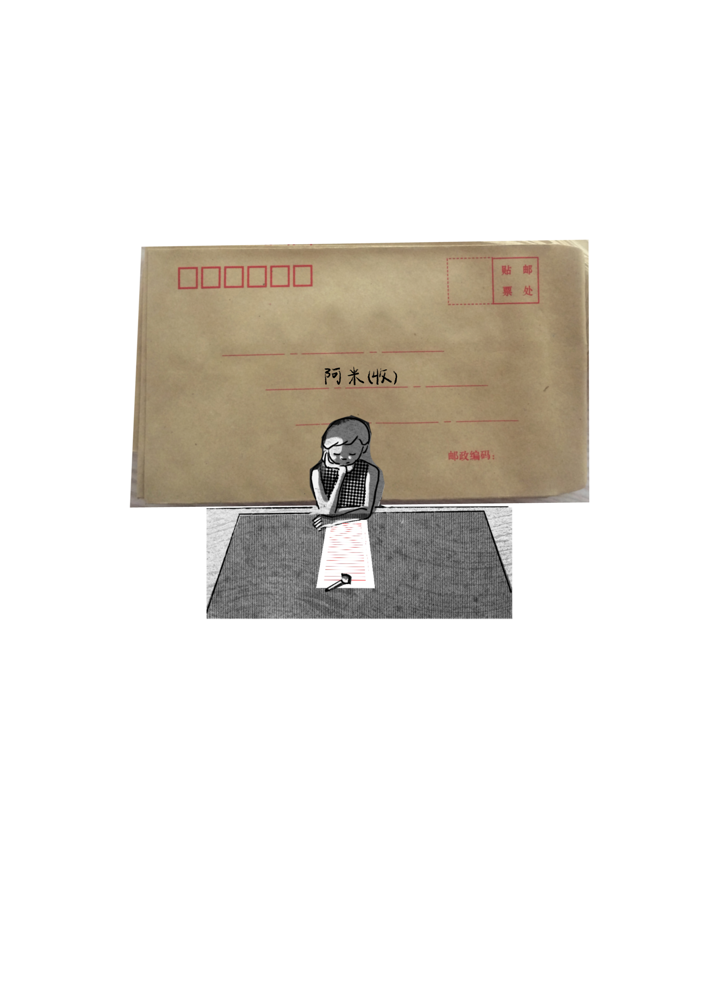

阿 米
ami



这篇漫画画于2025年的下半年，当时只画了一半，在两个月前报名参加挖矿漫画节后又再翻出来把它画完。
去年我也感觉自己陷入比较抑郁的状况之中，当时画的时候脑海里创造出了一个朋友的形象（Ami在法语里有朋友的意思），相当于是主角在给一个虚幻的朋友写的信，这个虚幻的朋友关注着她，给她提供力量，同时阿米身上也有她所不理解的东西。
虽然没有办法立马就让读完漫画的朋友高兴起来，但还是希望所有人都有从消沉中抬起头望天空的心情。
感谢你的阅读。